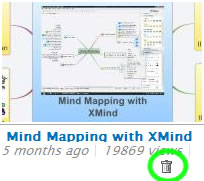

XMind Share は、家族、友人、同僚、そして世界中の人々と、マインド マップを共有するための無料のオンライン サービスです。このサービスを楽しむ方法はここにあります。
マップをアップロード
- You need an XMind account or, if not, sign up one.
- Sign in with your account by clicking Sign into XMind.net under help menu.
- Create a map using one of the templates, or open one from your local disk.
- Click Upload button on the far right of toolbar.
- In the dialog follows, you can preview the map's title, description, privacy settings and thumbnail picture.
- Click Upload button in bottom of the dialog, and XMind will start a background job to handle the uploading process.
それでは、アップロードダイアログ ボックスについて確認してみましょう
- 概要では、このマップの説明を追加することができます。

- プライバシーでは、マップの公開、非公開、プライベートの区分と、ダウンロードを許可するか設定します。

- プレビュー設定

Delete/Embed/Comment a map
アップロードが完了したら、メニューの[ヘルプ]→[アカウント(XMind ID)]を選択して、XMind 内のブラウザーでアップロードしたマップを確認することができます。
- Delete my online map via clicking the delete icon under map's thumbnail
 - Emebed any a online map to my blog via pasting the Embed Code on that map page

- Add comment to any a map.
マップビューアー

In this viewer, we can navigate the map. It also has another model, Outline. Click the Outline on the bottom, we'll be able to read this map in a traditional way.
マップの共有
In the privacy page, we know any map can have three kind privacies, Public, Unlisted, and Private. The way to share maps with different privacies has a litter differences
- Public Maps has no limitations. They can be seen by any person and searched by search engine.
- Unlisted Map can not be searched by search engine. They are not shown on XMind Share too. People, only who know map's URL, can read it.
- Private Map is available for all XMind users. If you want to share a private with some people, you should click the special Share to button and send the invitation to them. People, who get the invitation email, should at least have a free XMind Account for reading this private map online.
Now we find that unlisted map should be helpful to share a map in some special stituation, such as at meeting,at class, and etc. And Private Map will be able to play an important role in collaborating within a small team, or share some special and important information.
このサービスは、Amazon S3 サービスによって実現しています。